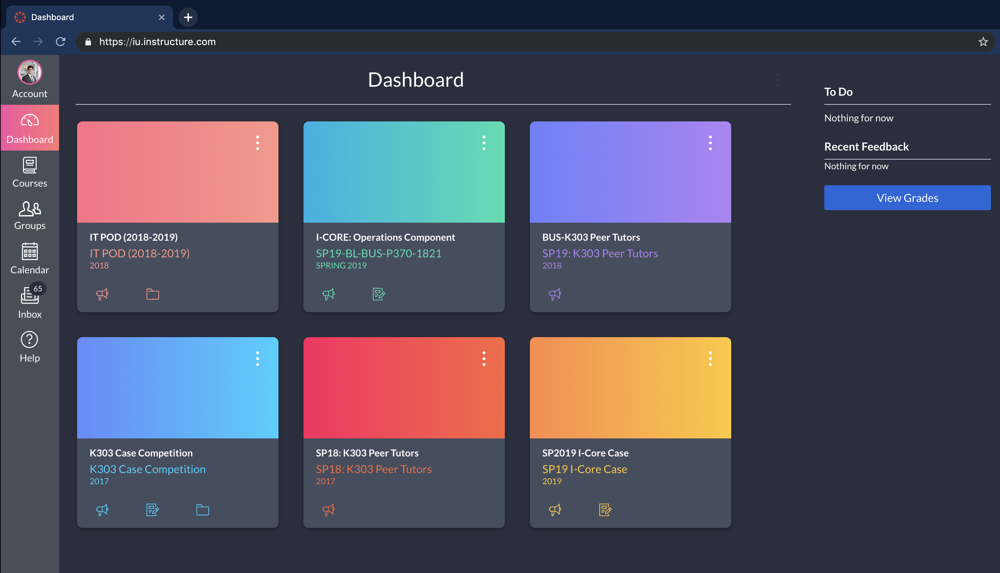
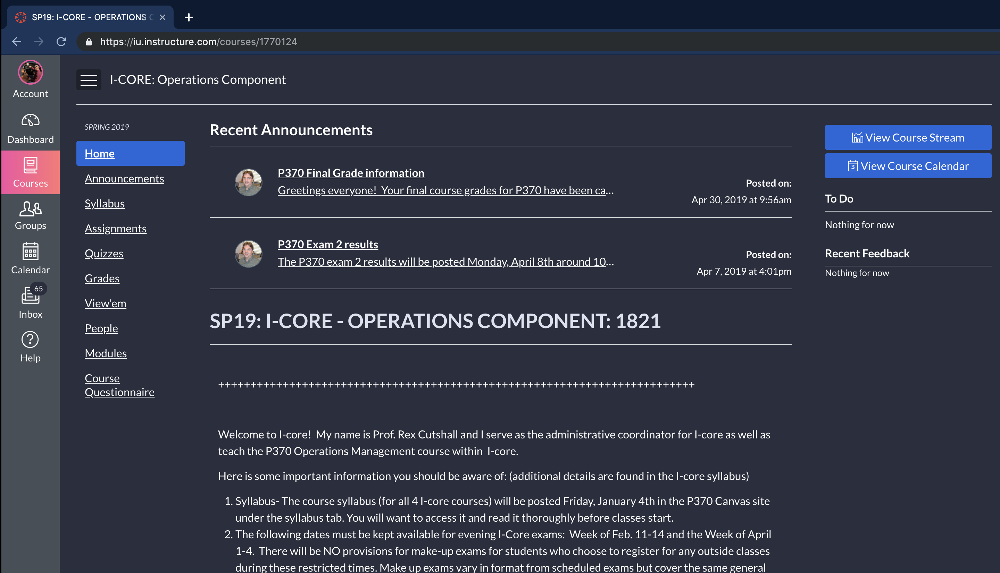
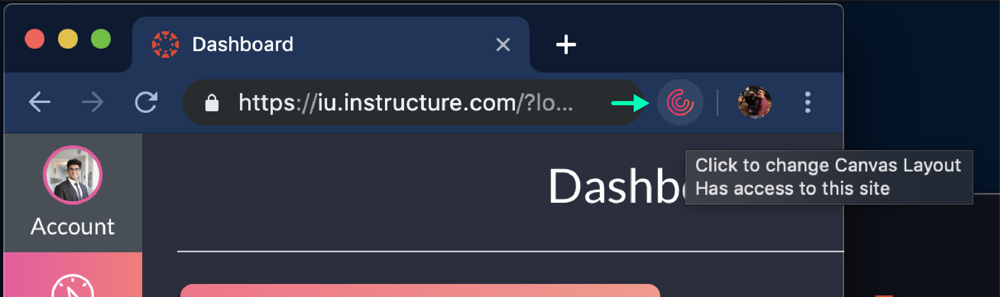

PROJECT
Personalize Canvas
February 12 2019

Tools Used
- JavaScript
Development Status
Active
Canvas
Indiana University's classes use a learning management system (LMS) called Canvas, an application offered by Instructure. Instructure is a company that offers LMS services to over 300 educational institutions in the United States.
The canvas website is an essential tool for each student. All online assignment submissions, discussion posts as well as professor announcements are made on the canvas course page. Students spend a lot of time working on weekly quizzes and assignments on the website itself.

Canvas Dashboard Page

Canvas Course Page
No Dark Mode :(
Working on assignments late at night became an unpleasant experience when the white background used to hurt and put strain on my eyes. I searched online for resources to change the background of my course page but instead I found others that had the same issue.

Canvas Forum Page
Canvas has a community forum where students can propose any features they would like to see on the website. Numerous students wanted a dark theme for canvas that would let them work on the site late at night too without hurting their eyes.
Solution :)
Since it would take time for Canvas to implement this feature, I was too impatient to wait. I watched Daniel Shiffman's 'How to make a Google Chrome Extension' tutorial and made a small app for my browser. Here are the results.
Canvas Homepage using Personalize Canvas Extension
Canvas Course Page using Personalize Canvas Extension
Personalize Canvas
Personalize Canvas is a chrome extension that can be used to change the theme of a student's canvas page. You can com pletely customize your theme by choosing from a wide variety of options from your browser's tool bar. Just click on the personalize canvas logo in the top right.
Use the pop up to window to tweak your canvas site appearance to your heart's content.
{kind=link}
{kind=link}
Personalize Canvas pop-up window